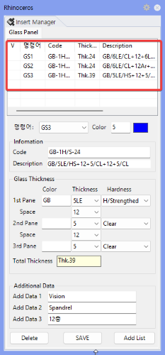

커튼월 Brep 면을 선택하여 유리 3D 솔리드를 자동 생성합니다. GS1 ~ GS9 는 각각 GsOpt 패널에서 미리 설정해 둔 유리 타입 1~9 번에 대응합니다.
참고: SSP 에 의해 Section 이 선택되어야 하며, 해당 Section 내에 [ G_Center1 ] Layer Line 이 있어야만 한다.
사용 목적
GsOpt에 설정해 둔 유리 타입 1~9를 골라 커튼월 면에 유리 3D 솔리드를 즉시 생성할 때 사용합니다. 타입별 단축 명령이라 여러 사양의 유리를 면마다 빠르게 배치할 수 있습니다. SSP로 Section이 선택되고 해당 Section에 G_Center1 Line이 있어야 동작합니다.
사용 방법
GsOpt 패널에서 적용할 유리 타입(두께·사양·코드 등)을 먼저 설정합니다.
SSP로 해당 Section을 선택하고, Section 안에 G_Center1 레이어의 기준선이 있는지 확인합니다.
Rhino 명령창에 GS1 (또는 GS2~GS9) 을 입력하고 Enter 를 누릅니다.
유리를 생성할 커튼월 Brep 면(서피스)을 선택합니다.
옵션으로 Distance(거리 기준) 또는 Section(단면 기준) 분할 방식을 선택할 수 있습니다.
Enter 를 눌러 완료하면 Glass 레이어에 유리 솔리드가 생성됩니다.
실행 예시
Gmd로 만든 유리 Face 선택

GsOpt 타입 설정을 적용한 Glass Solid 생성 결과
GS 번호와 타입의 관계
명령어
설명
GS1
GsOpt 패널의 1번 타입 설정으로 유리 솔리드를 생성합니다.
GS2
GsOpt 패널의 2번 타입 설정으로 유리 솔리드를 생성합니다.
GS3 ~ GS9
GsOpt 패널의 3~9번 타입 설정으로 유리 솔리드를 생성합니다.
실행 조건
항목
설명
입력 객체
Gmd 명령으로 생성된 Glass Face를 선택합니다.
Section 선택
SSP로 해당 Section이 선택되어 있어야 합니다.
기준선
선택된 Section 안에 G_Center1 레이어의 기준선이 있어야 합니다.
옵션
옵션
설명
Distance
뮬리언 간 거리를 기준으로 유리 면을 분할합니다.
Section
단면 데이터를 기준으로 유리 면을 분할합니다.
실행 결과
항목
설명
레이어
Glass_XX 레이어에 유리 솔리드 객체가 생성됩니다.
형상
선택한 Brep 면을 기준으로 GsOpt에 설정된 두께로 압출된 3D 솔리드가 생성됩니다.